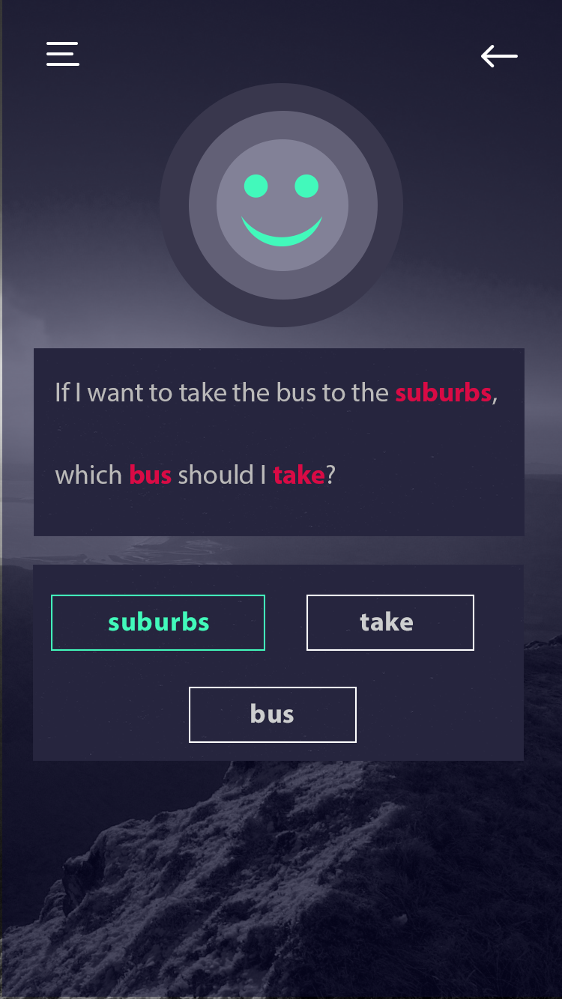
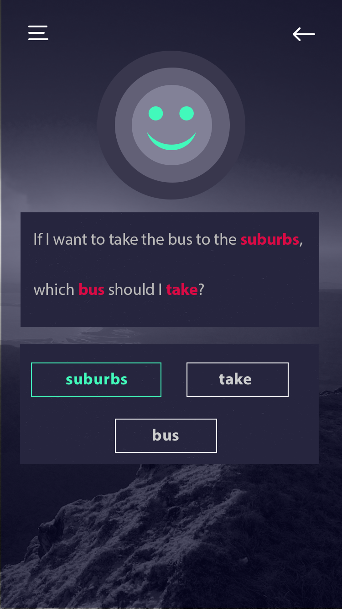

PART 3: The solution
Today, there is plenty of mobile applications and software intended to train the users in English pronunciation. These applications are structured in an English course manner, where the user goes through different levels of knowledge and evolves through time. They offer an academic approach where each sound is to be practised based on fixed words that are provided. There are tools that outperform others, and those are normally paid. While the pronunciation feedback is present for free text that the user input, that is normally one of the complementary features of the app. However, Athena approach is different since it focuses on other profile of users: those who are looking for a fast, straightforward feedback on their speech pronunciation.
We will provide that fast, straightforward feedback on user’s speech pronunciation. We envision an application that will obtain the text the user wants to pronounce, will provide the correct pronunciation, user will record and a feedback will be provided. We will get details on feedback as we perform interviews, but we imagine that the text will be presented to the user with colors indicating whether the word was pronounced correctly: from green if pronunciation is accurate to red if the word was mispronounced. For those mispronounced, the user will be able to click on them to listen the right pronunciation and practice to record again and get feedback (check our video!); so on till the user is satisfied or the word is pronounced correctly. Additionally, a percentage score will be displayed. For more details on this score, please check out the implementation section.
How the application will obtain the text is another objective of the needfinding we will perform. We believe typing and recording might be the most useful methods, but we want to get that information from users. We also believe other features such as synonym finding based on input speech might be another nice feature to have. It would help people who lack vocabulary.
PART 4: Needfinding
We will be using two needfinding techniques in order to better understand our customers and target market. Specifically, they are online surveys, and personal interviews. We chose online surveys so that we could get answers to general questions related to our problem and product, for a mass audience. It would allow us to better gauge who exactly our target customer is through a large pool of data.
We will be posting the survey through multiple online mediums. Four of the five group members are international students, and this gives us a large network of possible customers. We will be posting on each of our individual facebook accounts to attract users of multiple nationalities. Along with this, we will be posting the survey on whatsapp groups in which we feel potential customers could exist. A few that come to mind right now are friends groups from our home countries, along with professional groups where English was not the main medium of communication.
We chose to go with personal interviews for a few reasons. One is because we can ask more open ended questions in order to draw pertinent information, and can always ask a follow up question which could not be done in an online survey. Another advantage of the personal interview is that we can be more selective of the participants. This way, we can choose the participants which we feel would benefit most from our product, and through an iterative process, become more accurate in the said selection of participants. We will select candidates who we feel are our target market; specifically international students with low exposure to the english language prior to coming to the United States. We will conduct the interview using the following protocol: Introduction, Kickoff process, Build rapport, Main experiment, Reflection, Wrap up.
Online Survey Questions will include educational level, mother language, how would they rate their pronunciation skills, whether they have a hard time understanding others when they speak English, whether they use electronic dictionaries to check words, how often they have to present, feedback they get on presentations, if they use any tool for pronunciation. Interview Questions will include whether they have trouble pronouncing words in the English language, if there are situations in which they faced difficulties with pronunciation, if they did anything to overcome such difficulties, if they feel people have a hard time understanding what they have to say, what method they usually use while preparing for a presentation to help their pronunciation, what dictionary do they usually refer to check your pronunciation, if they think speaking words right helps you with communicating with people, etc.
PART 6: Implementation
Athena is going to have features that will allow users to improve their English pronunciation. With Athena, the user will have an user account that will keep track of their pronunciation progress. The user will be able to record themselves speaking a word in English, and then type in that word to the app. The app will then play back the proper pronunciation of the word and provide a score of how close their pronunciation was to the proper pronunciations.
Athena is going to be built as a mobile app. We believe that Athena will be most useful to users as a mobile app that they can carry around and use on-the-go as needed. While we believe that a mobile app is the best choice for our users, this choice comes with the certain drawbacks. Because the processing power on mobile applications is limited at best, our implementation will make use of a server to handle the pronunciation comparison algorithm. This means there will be a lot of data transferred back and forth between the server and the mobile app, and bad network connection could affect the speed and usability of the app.
Athena is going to be written as an iOS app using Swift and Xcode, largely because some team members have experience in the iOS coding environment. This frontend will handle the user interaction of both creating and managing their accounts, and recording and inputting the text of their words, and the displaying of the proper pronunciation and the score of the user pronunciation. The backend is going to be a server hosted by Amazon Web Services (AWS). Amazon’s API Gateway will be used to communicate information between the iOS app and the server, AWS Lambda will handle the API requests from the iOS app and to the text-to-speech API, and run the pronunciation comparison algorithm, as well as store user account information in the AWS Relational Database Service (RDS).
AWS was chosen because it offers all of our required services on a free tier level. AWS Lambda will be run using the Python SDK on the backend, as Python has many open source libraries such as LibROSA and Dejavu for audio processing and analysis. Additionally, a third-party text-to-speech API, Voice RSS, will be used to get the correct pronunciation of the user’s target words.
Athena faces many technical challenges. The largest challenge is creating a meaningful comparison between the correct pronunciation of the words and the user’s pronunciation of the words. To solve this problem, compare the frequencies of the user pronunciation and the proper pronunciation. First, we will do a Fourier Transform using the FFT algorithm, and then we will compare the frequency distribution. This will allow us to compare the two audio files without the volume and the frequencies themselves affecting the comparison. We additionally plan to use the Mel-Frequency Cepstrum Coefficient Algorithm (MFCC). Mel-Frequency Cepstrum Coefficient Algorithm is a popular algorithm designed for voice recognition. In general, it use a nonlinear scale(Mel Scale), which can better simulate our hearing system, to represent the voice signal. To get the Mel-Frequency, following steps are required: Split the audio signal into a series of frame, Pre-emphasis the signal and then filter out all noises via a HPF(High Pass Filter), Transfer the signal from time-domain into frequency-domain using Fourier Transform, Transfer the scale from frequency to Mel-scale using Mel Filter, Take the logarithm of all filterbank energies, Apply IDFT(Inverse Discrete Fourier Transform) towards each frame, then we got the cepstrum of this signal. The amplitudes we got is the MFCC and the first 13 coefficients are necessary for voice matching.
Given these two audio comparison algorithms, we plan to deploy two scoring schema respectively.
For frequency distribution algorithm, we plan to use KS Test (Kolmogorov-Smirnov Test). In KS Test, the maximum distance between two samples will be returned as the difference between these two samples. We can use this difference as our final score. The shorter this distance is, the better score you will get. For MFCC algorithm. We can simply compare whether the MFCC coefficient array in user’s audio is the same that in standard audio. But, we need to do further experiment to figure out the weights of these 13 coefficient. Another challenge is getting a library of the correct pronunciations of words. To accomplish this, we decided to use to text-to-speech API that takes in text, and then sends back an audio file of a computerized pronunciation of the text. Specifically, we plan to the use previously mentioned Voice RSS API, which allows 350 free requests a month. A potential issue with this solution is if the computer pronunciation does not sound accurate enough to real life, and the comparisons with the user voice is inaccurate. If we find the comparisons to be inaccurate, we plan to adjust the algorithm to account for these differences. We looked into using a pronunciation database, but there are not any that are free, and the cheapest one does not distinguish between American and British English, so we decided that we will need to stick with the Voice RSS API.
Other small challenges include recording the user’s audio in the iOS app and sending that audio to AWS for processing. To record user audio, we plan to use the AVAudioRecorder iOS API. To send the audio file to the server, we will use the Kolmogorov-Smirnov Goodness-of-Fit Test NSMutableData API, which wraps files to allow them to be sent via byte buffer to the server.


 
